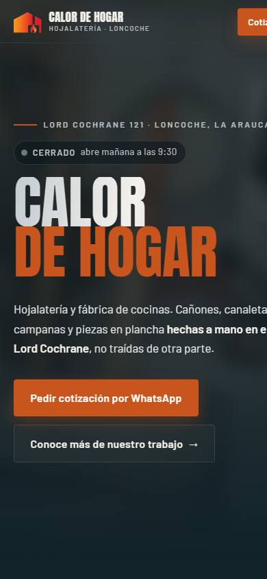

Proyecto 06 — oficios
Calor de Hogar
Encargo Hojalatería · Loncoche

El problema
Un taller donde cada cañón y cada campana sale de una plancha plana, doblada a mano. No había ni una foto del negocio en internet. Todo salió del material del local: la paleta son los colores reales de las paredes y las estanterías, y los ocho videos del taller bajaron de 583 MB a 10 MB, sin descargarse hasta que alguien toca play. Tiene su propia página de catálogo con los tipos de pieza, y cierra con la entrevista que le hizo la Municipalidad de Loncoche en el taller.
La pieza
Catálogo de piezas de hojalatería
Dibujada en SVG para este negocio. Responde la pregunta que sus clientes se hacen y que nadie del rubro contesta por escrito.

Qué lleva dentro
- 8 videos · 583 MB → 10 MB
- Catálogo de piezas
- Cotizador WhatsApp